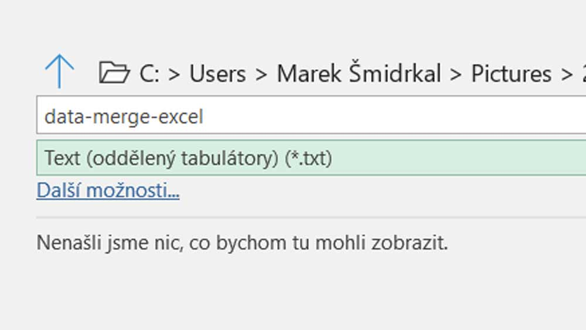
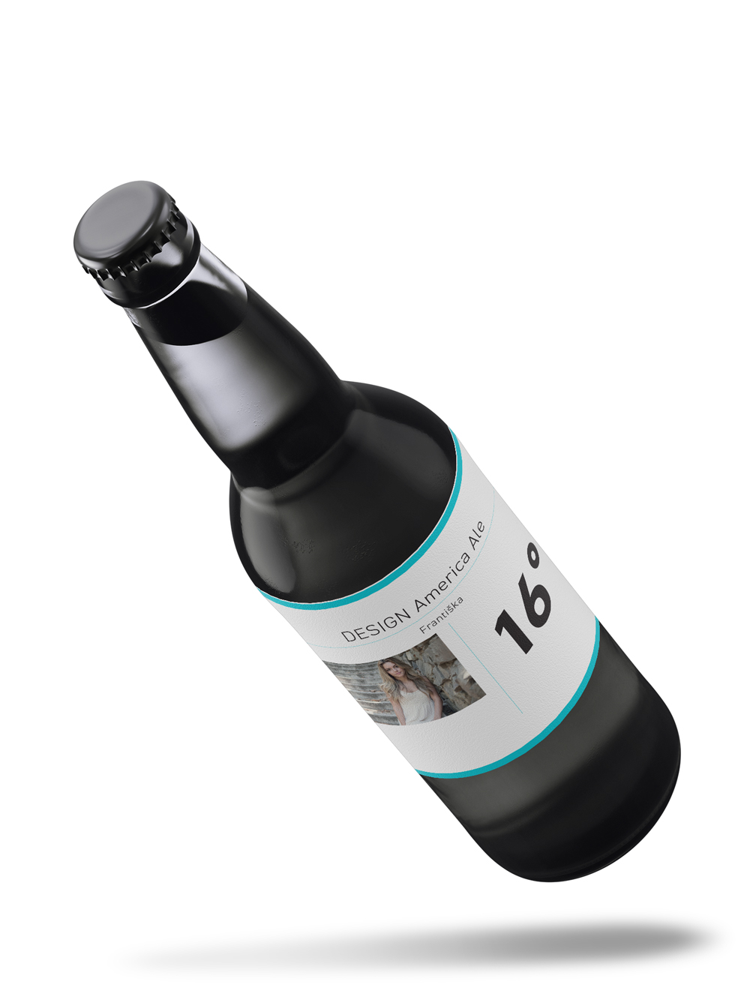

Panel funkce sloučení dat si otevřu přes Okno>pomůcky>sloučení dat
Jako první budu potřebovat vzor, do kterého budu později přes sloučení dat nalévat texty, obrázky nebo QR kódy (které záměrně vynechám, protože je to hrozná ošklivost, když se to někde na vizitce použije).
Klient chce pro svoje zaměstnance připravit párty, kde bude dostatek piva, které bude mít personalisované etikety. Každá bude věnovaná jednomu z členů týmu.
Měnit se bude hlavní nadpis, jméno pod ním a fotografie. Texty je potřeba připravit v Excelu (nemusí to být zrovna Excel, ale přijde mi to nejšikovnější). Otevřu si prázdný dokument a do prvního řádku napíšu zástupné názvy jednotlivých polí. Tam kde se mají vložit obrázky je potřeba před název vložit @. V excelu je většinou před zavináč potřeba ještě vložit apostrof '.
Začnu vyplněním zástupných názvů.
Do dalších řádků již přijdou ostré texty. K obrázkům přijde úplná cesta. Musím si dát pozor, abych Excel správně uložil, protože ve výsledku potřebuji text oddělený čárkami nebo tabulátory. V Excelu dám uložit a vyberu typ Text (oddělený tabulátory) (*.txt). Soubor Excelu si zavřu, jinak nepůjde importovat do InDesignu.
Pokračuji doplněním textů a cest k obrázkům.
Musím Excel správně uložit.
V InDesignu si v menu karty sloučení dat vyberu možnost vybrat zdroj dat... V následujícím dialogu si vyberu Oddělovač: tabulátor.
Import zdroje dat.
V kartě sloučení dat se mi objeví položky z prvního řádku, které jsem zadal v Excelu. V sazbě si smažu zástupné texty v rámečcích. Kliknu si na prázdný rámeček a dvojklikem na správný řádek v kartě sloučení dat si přidám zástupný text. Fotografii také přidávám do textového rámečku jako ukotvený objekt.
Grafická šablona pro import dat je připravená.
Teď si kliknu na malou ikonu vpravo. Zde nemusím nic nastavovat. Potvrdím kliknutím na ok. Vytvoří se mi nový dokument, ve kterém mám nalité všechny texty i obrázky.
Kliknutím na ikonu vytvořím nový dokument, který bude mít nalité texty i obrázky.
Po vytvoření nového dokumentu se mi objeví hláška, jestli nechybí nějaké obrázky nebo mi nevznikl přesahující text. Pokud ne mám hotovo, pokud ano, budu muset sazbu ručně doladit.
Hotová sazba za pomoci sloučení dat.
